Greyed Actions and Record dead on a white card
Your two notes: a dead sow's actions should simply be grey, not hidden behind "Unavailable actions", and Record dead should not be rows loose on the grey. Every screen that changed is below, before and after, at 390 wide.
1 · Actions stay in place, greyed when they don't apply
The Actions sheet is shared, so this applies to every pig and every reason. A greyed action keeps its place and its own description; the reason is read out by the screen reader only. The "Unavailable actions" link and its page are gone.
A sow that died
Was one Note tile and "Unavailable actions (2)". Now the whole grid, greyed except Note, and her Production rows greyed.
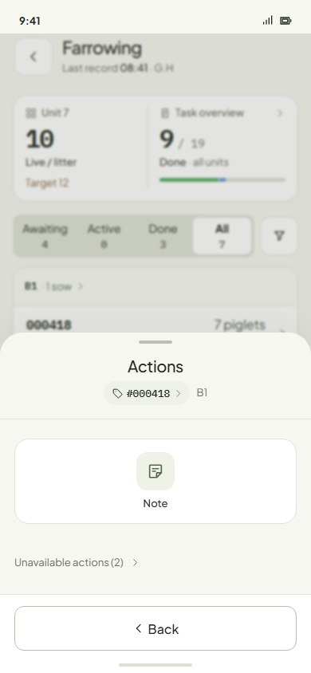
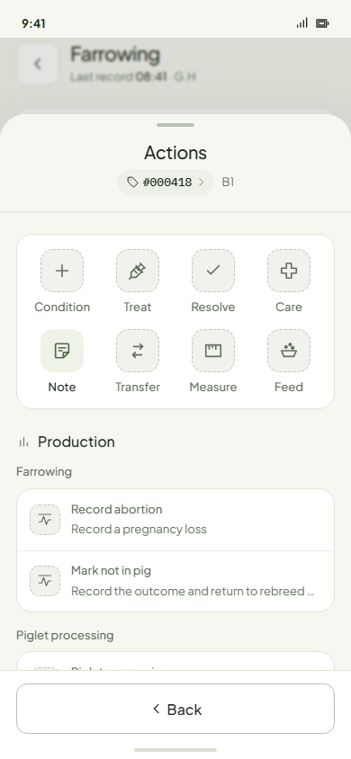
A live sow
Resolve and Care (no open condition) and Feed (no feeding plan) were missing. Now they sit in their places, greyed.
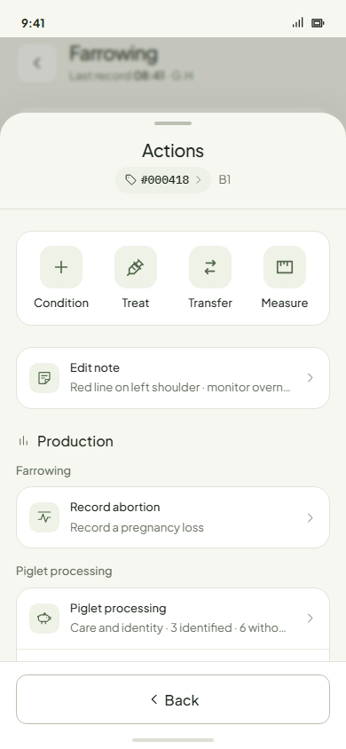
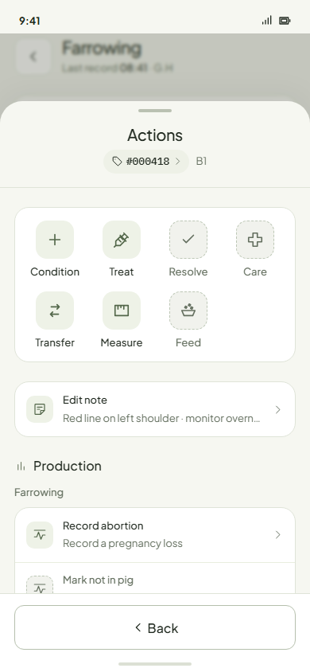
Pig record · Actions
Resolve greyed in place (no open condition).
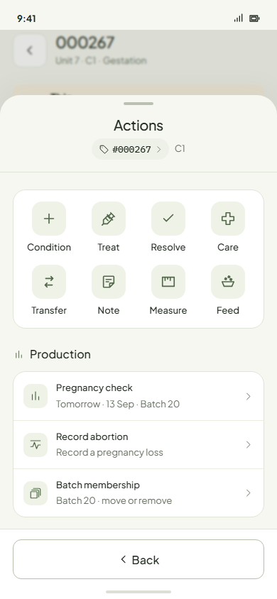

The old "Unavailable actions" page
The page is gone; this screen now shows the same pig's Actions with Resolve and Care greyed.
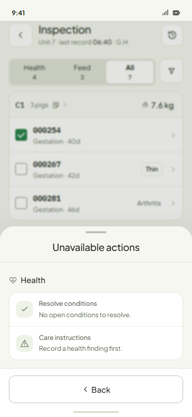
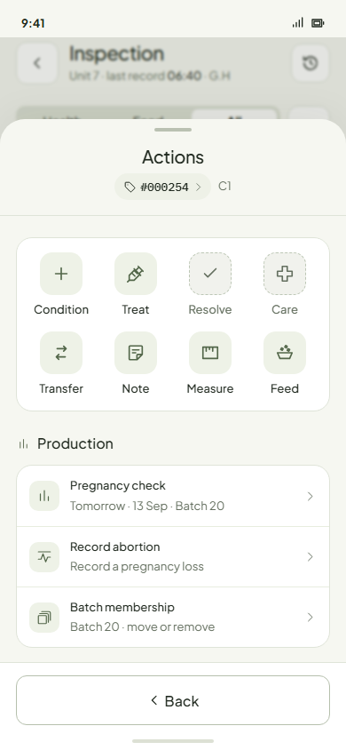
Inspection · Actions for two pigs
Nothing is unavailable here, so the content is unchanged.

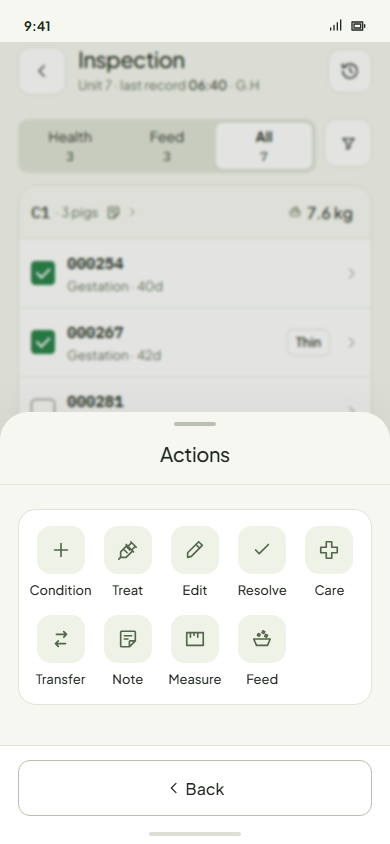
2 · Record dead and Report death on a white card
Your surfaces rule from 3 November: every drawer is the grey with white cards, nothing loose on the grey. The steppers are now one white card.
Record dead · finished litter
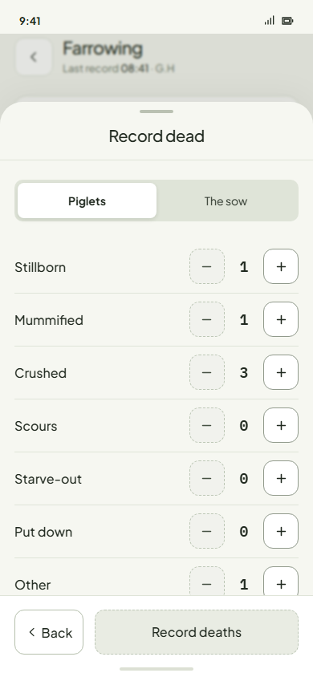
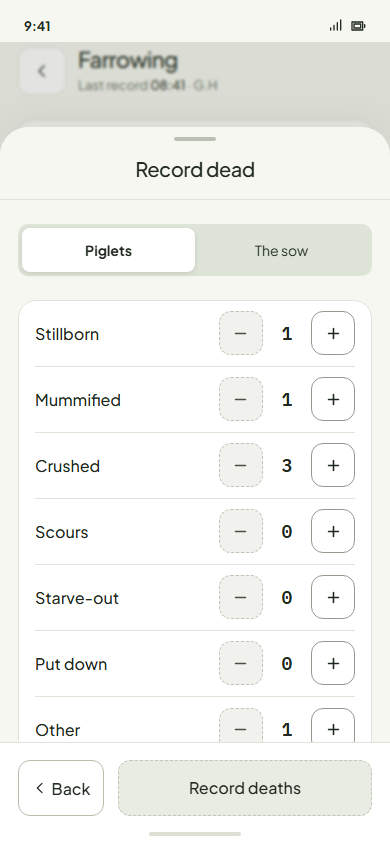
Record dead · a sow that died
Same card. Clear no longer shows when there is nothing to clear.
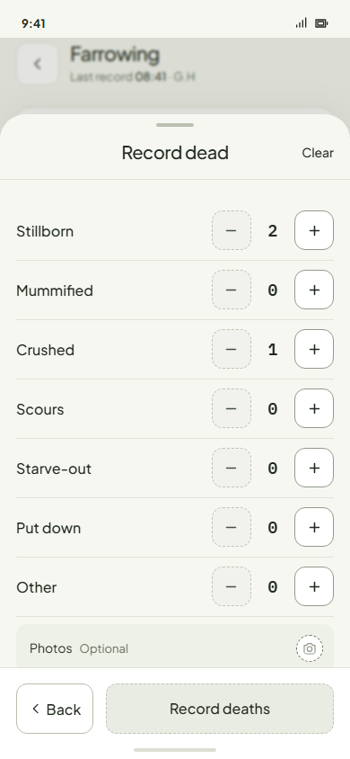
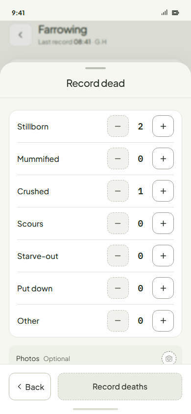
Record dead · The sow

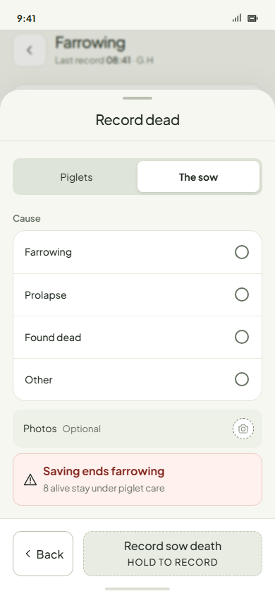
Report death · during counting
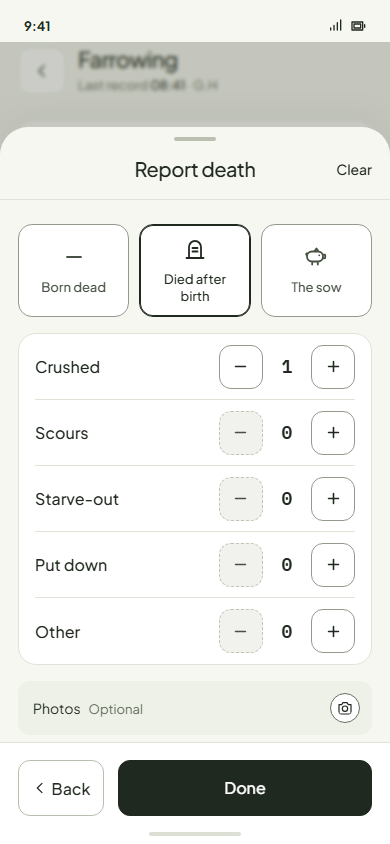

Report death · The sow
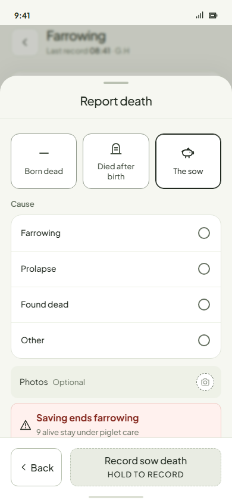

3 · Other Farrowing drawers with the same problem
The 3 November sweep skipped Farrowing, so three more drawers had counter boxes grey on grey. They now use white cards.
Foster piglets · Send
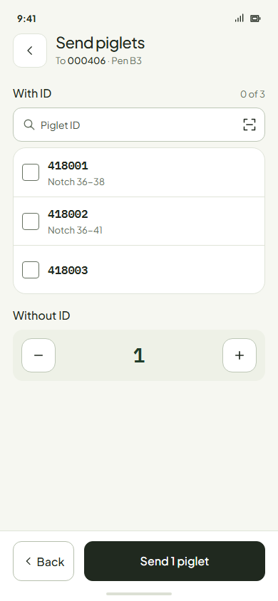
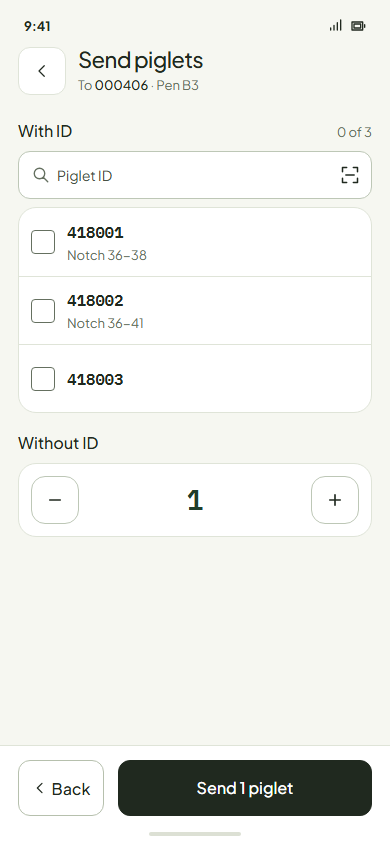
Correct piglet count
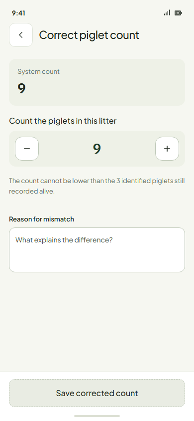
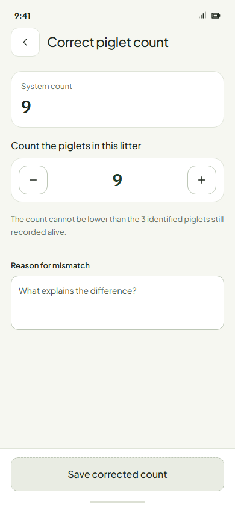
Record piglet deaths
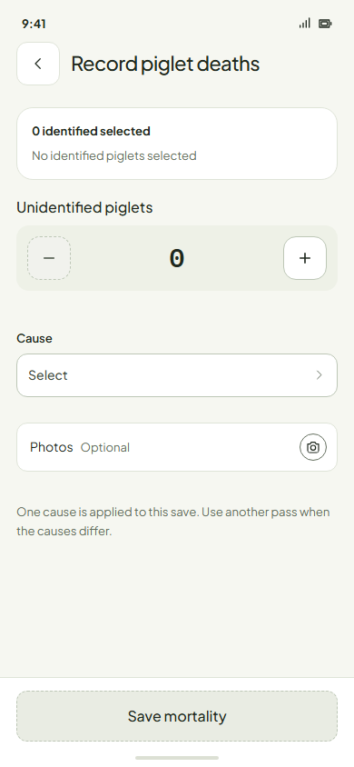
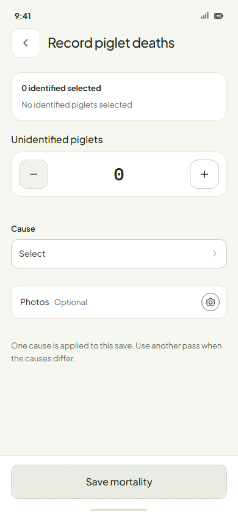
Calls I made
- A dead sow's Production actions now show greyed. Before, they were hidden. Nothing that was unavailable became available.
- A greyed row keeps its normal description. Showing the reason instead put "This sow has died." on six rows in a row.
- With several pigs selected and none with a condition, Edit conditions now shows greyed instead of being absent.
- Piglet processing's pages were left alone, since that feature isn't designed yet.